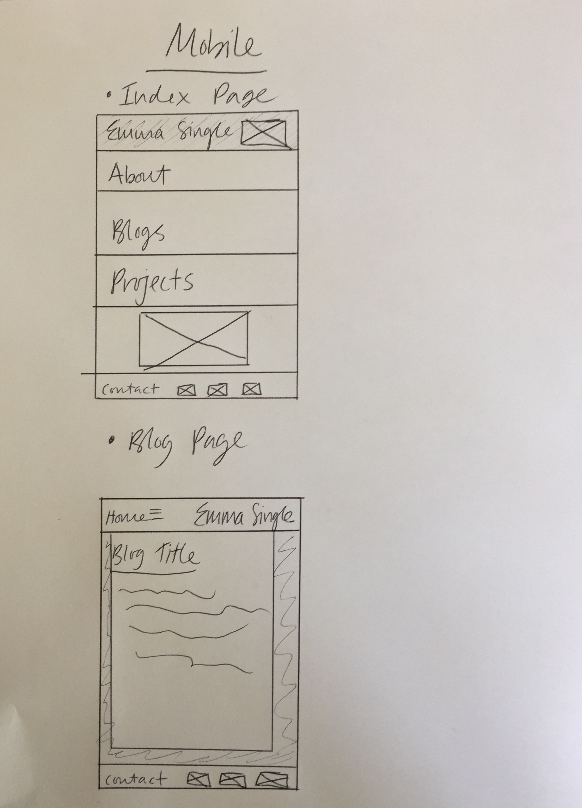

A responsive site is a site that changes by itself, in a controlled way depending on the viewers mode of viewing. Whether it's a mobile, a laptop, iPad etc. The website adapts to whatever size the browser is. It's important because the majority of people will view multiple websites over multiple platforms, and generally if the website doesn't work well for whatever platform you're on, the viewer will be deterred from staying on that website. So having the website be responsive, allows the website be accessible to all types of viewers and it be an enjoyable experience.
Most web users are using a mobile device, so to make the mobile version of the site accessible and pleasant to those viewers makes sense, as they will be the majority of people viewing the site.
They're pre-developed code to help people get started developing their sites. It can be helpful as a starting point, but I think it's a bit messy and I'd rather just take aspects of it... But I could be going the wrong way about it :D
Wireframes are a great way of planning out the design and approach of the website, so you have a clear visual idea of how it's going to work and operate.
The general layout thing I found difficult. Things not doing what I want them to do!!!!! For instance my nav bar not going all the way across... it just won't do it. And I need to somehow center my text without making everything else white. And make my nav bar not so thick!!! And make my name and picture thing in the nav bar go right to the very edge. And make it look good while responding. This I am stumped with. So a fair bit really. But in general I'm happy with my design. Just need to it WORK.